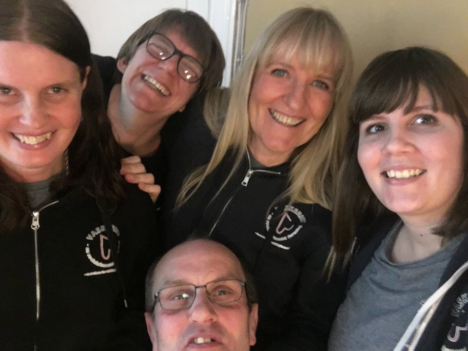

Foreningen, Vaskeriet – en øvebane for udviklingshæmmede, startede i januar 2017. Vaskeriet holder til i fællesvaskeriet i Brabrand Boligforenings afdeling Søvangen i Brabrand, som ligger på kanten af Gellerupparken.
Vaskeriet - en øvebane for udviklingshæmmede er en almennyttig foreningen og ikke et helt almindeligt vaskeri. For hos os er det udviklingshæmmede du møder, når du afleverer dit vasketøj.
Vaskeriet leverer rent vasketøj til beboere i Søvangen og til kunder rundt omkring i hele Århus. Vaskeriet er desuden en øvebane for udviklingshæmmede, der gennem deres arbejde udvikler mod, evner og drømme til at finde sig tilrette og trives på en arbejdsplads. Sidst, men ikke mindst er Vaskeriet et mangfoldigt fællesskab, der knytter bånd mellem beboerne i boligforeningen, bygger bro over fordomme, og modvirker ensomhed. I Vaskeriet arbejder vi ikke med målgrupper, men med hvad mennesker kan bidrage til fællesskabet med og den grundlæggende overbevisning bag Vaskeriet er, at det skaber værdi, når man selv er med til at skabe sit liv.
125 kr.
199 kr for 6 kg vasketøj
Dunpude: 100 kr
Dundyne: 225 kr.
Fiberpude: 80 kr.
Fiberdyne: 180 kr.
Børnedyne: 100 kr.
Rullemadras, pr. kg.: 75 kr.
Rulning af dug, uden vask: 25 kr pr. meter
Levering og afhentning: 45 kr.
Bankoverførsel:
Reg: 1971 Kontonr: 4390540081
MobilePay: 94735
Der betales ved levering.
Alle priser er inklusiv moms og alle afgifter.
Vaskeriet - en øvebane for udviklingshæmmede - Louisevej 6 8220 Brabrand - Tlf.: 42 64 19 06